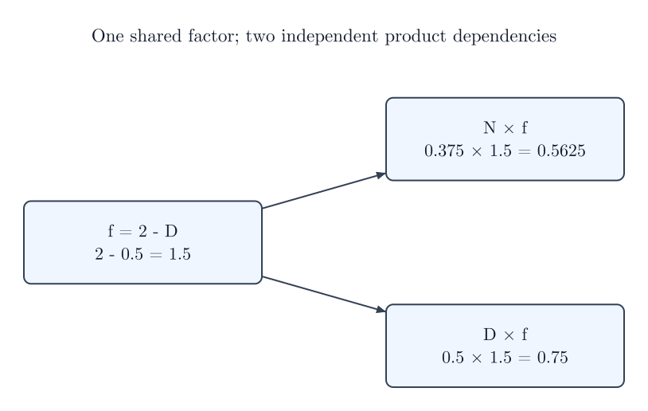
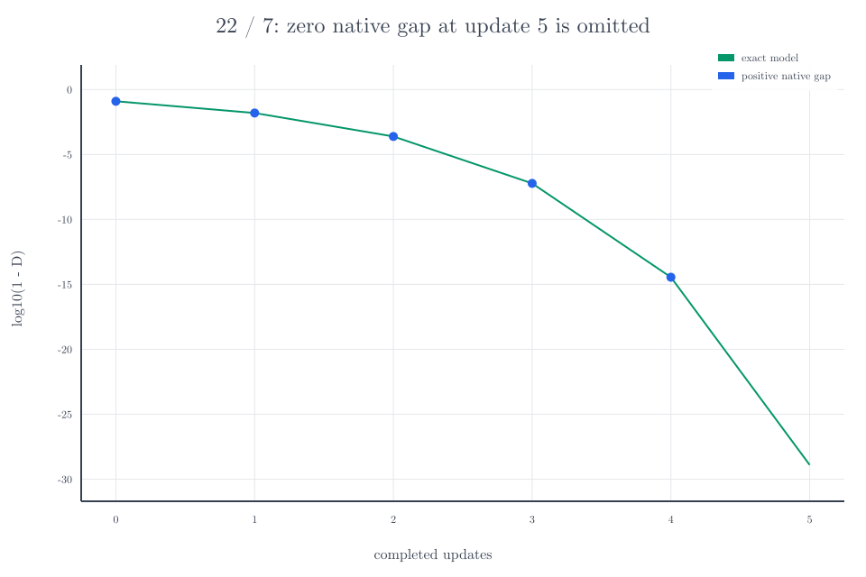
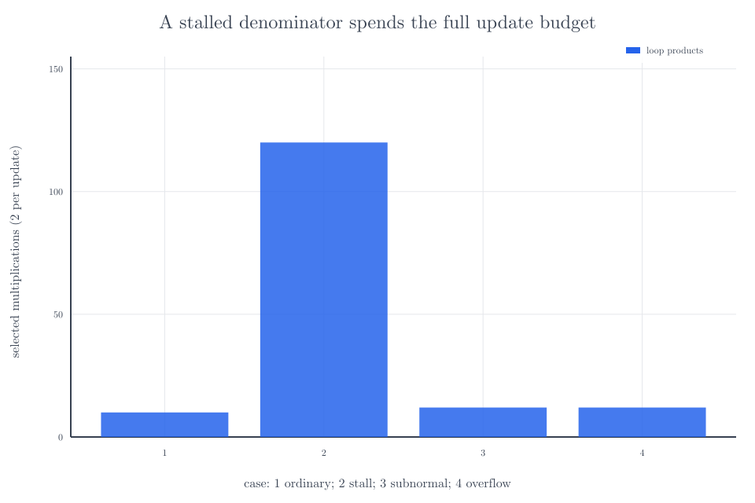

Goldschmidt division: square the gap, inspect the rounding
Abstract
Division can be approximated by repeatedly multiplying a numerator and denominator by the same correction, steering the denominator towards one. This report derives the exact-arithmetic recurrence, then follows the library's actual double-precision calculation. Native records expose both products and their shared factor without replay. The original four examples remain, alongside controls showing denominator stagnation and loss during normalization. A small denominator gap is not a certificate of a correctly rounded quotient.
Begin with two exact updates
To divide 3 by 4, normalization gives N₀=3/8 and D₀=1/2. The first factor is 3/2; both products are exact binary fractions. The numerator product can start as soon as the factor exists, independently of the denominator product. This data-flow observation does not measure speed or imply that this implementation launches parallel work.
#include <dm/dm.hpp>
int main() {
std::filesystem::create_directories("build");
const auto t = dm::algorithms::goldschmidt_trace(3, 4, 2, 2);
std::print("| update | N before | D before | factor | N after | D after |\n| ---: | ---: | ---: | ---: " "| ---: | ---: |\n");
for (const auto &q : t.steps)
std::print("| {} | {} | {} | {} | {} | {} |\n", q.update,
q.before.numerator, q.before.denominator, q.factor,
q.after.numerator, q.after.denominator);
const auto &q = t.steps.front();
dm::graphics::Diagram d(65, 1100);
dm::graphics::DiagramNodeStyle box;
box.width = 4.6;
box.height = 1.6;
box.font_size = 22;
d.node("factor", {0, 0},
std::format("f = 2 - D\n2 - {} = {}", q.before.denominator, q.factor),
box).node("numerator", {7, 2},
std::format("N × f\n{} × {} = {}", q.before.numerator,
q.factor, q.after.numerator), box).node(
"denominator", {7, -2},
std::format("D × f\n{} × {} = {}", q.before.denominator, q.factor,
q.after.denominator), box).edge("factor", "numerator").edge(
"factor", "denominator").text({3.5, 4},
"One shared factor; two independent product dependencies",
23).save_svg("build/goldschmidt_flow.svg");
if (t.run.quotient != .703125 || t.run.loop_multiplications != 4)
throw std::runtime_error("exact dyadic witness");
}| update | N before | D before | factor | N after | D after |
|---|---|---|---|---|---|
| 1 | 0.375 | 0.5 | 1.5 | 0.5625 | 0.75 |
| 2 | 0.5625 | 0.75 | 1.25 | 0.703125 | 0.9375 |

The diagram labels come from the first captured native update. The two-update estimate is 0.703125, below the exact quotient 0.75; the explicit budget stops before convergence.
Derive the exact-arithmetic model
Write d=s·m·2ᵉ, with s∈{−1,+1} and 1/2≤m<1. The core computes D₀=m and N₀=ldexp(n,−e), then repeats
In exact arithmetic the ratio Nₜ/Dₜ remains n/d. With δₜ=1−Dₜ,
Thus the signed numerator estimate obeys q̂ₜ=q(1−δₜ), where q=n/d. For q≠0 its exact relative error is δₜ. Since 0<δ₀≤1/2, the ideal gap shrinks at least as fast as 2^(−2ᵗ). These identities assume exact scaling and products; the floating-point implementation does not promise them.
The ordinary API makes at most 60 updates and tests D−1<10⁻¹⁶ after each update. Each completed update counts two multiplications. That selected count excludes normalization, factor subtraction, tests, the final sign and all machine/compiler costs. It supports no ranking against hardware division or Newton iteration.
Retain the original four divisions
The following program calls the shared native loop. Its hardware quotient is an independent floating-point comparison, not a replacement for the reported result. Absolute differences are meaningful for these four ordinary finite cases. The figure follows the actual 22/7 records; a zero gap is printed in the table and omitted from the logarithmic native curve, with no artificial floor.
#include <dm/dm.hpp>
int main() {
std::filesystem::create_directories("build");
std::print("| n | d | native quotient | hardware n/d | absolute difference | updates | loop products | " "stop |\n| ---: | ---: | ---: | ---: | ---: | ---: | ---: | --- |\n");
for (const auto[n, d] : std::vector<std::pair<double, double>>{{1, 3},
{22, 7},
{-5, 1024},
{2, 1e-6}}) {
const auto r = dm::algorithms::goldschmidt_run(n, d);
std::print("| {} | {} | {:.17g} | {:.17g} | {:.6g} | {} | {} | {} |\n",
n, d, r.quotient, n / d, std::abs(r.quotient - n / d),
r.updates, r.loop_multiplications,
dm::algorithms::goldschmidt_stop_name(r.stop));
}
const auto t = dm::algorithms::goldschmidt_trace(22, 7);
std::vector<double> x{0}, gap{std::log10(1 - t.run.initial.denominator)}, ix{0}, ideal{gap[0]};
std::print("\n| update | actual N | actual D | actual gap |\n| ---: | ---: | ---: | ---: |\n| 0 | " "{:.17g} | {:.17g} | {:.17g} |\n",
t.run.initial.numerator, t.run.initial.denominator,
1 - t.run.initial.denominator);
for (const auto &q : t.steps) {
const double g = 1 - q.after.denominator;
std::print("| {} | {:.17g} | {:.17g} | {:.17g} |\n", q.update,
q.after.numerator, q.after.denominator, g);
if (g > 0) {
x.push_back(q.update);
gap.push_back(std::log10(g));
}
ix.push_back(q.update);
ideal.push_back(std::ldexp(ideal.front(), q.update));
}
auto p = dm::graphics::RPlot::create();
p.line(ix, ideal, "exact model", {5, 150, 105}, 2).points(
x, gap, "positive native gap", {37, 99, 235}, 5).title(
"22 / 7: zero native gap at update 5 is omitted").x_label(
"completed updates").y_label("log10(1 - D)").save_svg(
"build/goldschmidt_gap.svg");
if (t.run.updates != 5 || t.run.final_state.denominator != 1)
throw std::runtime_error("native stop");
}| n | d | native quotient | hardware n/d | absolute difference | updates | loop products | stop |
|---|---|---|---|---|---|---|---|
| 1 | 3 | 0.33333333333333331 | 0.33333333333333331 | 0 | 5 | 10 | tolerance |
| 22 | 7 | 3.1428571428571428 | 3.1428571428571428 | 0 | 5 | 10 | tolerance |
| -5 | 1024 | -0.0048828125 | -0.0048828125 | 0 | 6 | 12 | tolerance |
| 2 | 1e-06 | 2000000.0000000005 | 2000000 | 4.65661e-10 | 6 | 12 | tolerance |
| update | actual N | actual D | actual gap |
|---|---|---|---|
| 0 | 2.75 | 0.875 | 0.125 |
| 1 | 3.09375 | 0.984375 | 0.015625 |
| 2 | 3.14208984375 | 0.999755859375 | 0.000244140625 |
| 3 | 3.1428569555282593 | 0.99999994039535522 | 5.9604644775390625e-08 |
| 4 | 3.1428571428571317 | 0.99999999999999645 | 3.5527136788005009e-15 |
| 5 | 3.1428571428571428 | 1 | 0 |

For 22/7, D₀=7/8 and the ideal gaps are (1/8)^(2ᵗ). The actual denominator rounds to one at update five, so execution stops there; no sixth update is replayed. Agreement with ordinary division on a few examples establishes neither correct rounding nor accuracy for all representable magnitudes.
Test where the exact model stops explaining the implementation
For d=nextafter(1,0), normalization leaves D just below one. The correction 2−D rounds to exactly one in round-to-nearest arithmetic. Every update leaves both states unchanged. The positive gap 2⁻⁵³ exceeds 10⁻¹⁶, so the loop exhausts all 60 updates.
A separate failure occurs before the loop: dividing the smallest positive subnormal by one scales its numerator by 1/2, rounding it to zero. The true hardware quotient remains representable. The final denominator reaches one, but the native quotient is zero. Finite inputs can also overflow during scaling, producing infinity. These controls describe the preserved algorithm rather than silently substituting a more accurate division.
#include <dm/dm.hpp>
int main() {
std::filesystem::create_directories("build");
const double tiny = std::numeric_limits<double>::denorm_min();
const std::vector<std::pair<double, double>> cases{{22, 7},
{1,
std::nextafter(1., 0.)},
{tiny, 1},
{std::numeric_limits<
double>::max(), tiny}};
std::vector<double> index, work;
std::print("| case | initial N | final D | native | hardware | updates | stop |\n| --- | ---: | ---: | " "---: | ---: | ---: | --- |\n");
const std::vector<std::string> names{"ordinary", "stalled",
"subnormal loss", "overflow"};
for (std::size_t i = 0; i < cases.size(); ++i) {
const auto[n, d] = cases[i];
const auto r = dm::algorithms::goldschmidt_run(n, d);
index.push_back(i + 1);
work.push_back(r.loop_multiplications);
std::print("| {}: {} | {:.17g} | {:.17g} | {:.17g} | {:.17g} | {} | {} |\n",
i + 1, names[i], r.initial.numerator,
r.final_state.denominator, r.quotient, n / d, r.updates,
dm::algorithms::goldschmidt_stop_name(r.stop));
}
auto p = dm::graphics::RPlot::create();
p.bars(index, work, "loop products", {37, 99, 235}).title(
"A stalled denominator spends the full update budget").x_label(
"case: 1 ordinary; 2 stall; 3 subnormal; 4 overflow").y_label(
"selected multiplications (2 per update)").y_limits(0, 155).save_svg(
"build/goldschmidt_limits.svg");
const auto stall =
dm::algorithms::goldschmidt_trace(1, std::nextafter(1., 0.));
if (stall.run.updates != 60 || stall.steps.back().factor != 1 ||
dm::algorithms::goldschmidt_division(tiny, 1) != 0)
throw std::runtime_error("rounding controls");
bool quota = false, domain = false;
try {
(void) dm::algorithms::goldschmidt_trace(22, 7, 60, 4);
} catch (const std::length_error &) {
quota = true;
}
try {
(void) dm::algorithms::goldschmidt_division(1, -0.);
} catch (const std::invalid_argument &) {
domain = true;
}
const auto empty = dm::algorithms::goldschmidt_trace(3, 4, 0, 1);
const auto unlimited = dm::algorithms::goldschmidt_trace(22, 7, 60, 0);
auto copy = unlimited;
copy.steps[0].factor = 0;
std::print("\nQuota rejects fifth record: {}; signed-zero divisor rejected: {}; zero-budget history: " "{}; disabled quota records: {}; copied history independent: {}.\n",
quota, domain, empty.steps.size(), unlimited.steps.size(),
unlimited.steps[0].factor != copy.steps[0].factor);
if (!quota || !domain || !empty.steps.empty() || unlimited.steps.size() != 5)
throw std::runtime_error("boundary controls");
}| case | initial N | final D | native | hardware | updates | stop |
|---|---|---|---|---|---|---|
| 1: ordinary | 2.75 | 1 | 3.1428571428571428 | 3.1428571428571428 | 5 | tolerance |
| 2: stalled | 1 | 0.99999999999999989 | 1 | 1.0000000000000002 | 60 | iteration_limit |
| 3: subnormal loss | 0 | 1 | 0 | 4.9406564584124654e-324 | 6 | tolerance |
| 4: overflow | inf | 1 | inf | inf | 6 | tolerance |
Quota rejects fifth record: true; signed-zero divisor rejected: true; zero-budget history: 0; disabled quota records: 5; copied history independent: true.

The trace owns one complete record per actual update, with initial normalization stored separately. The default record quota is one million; zero disables that policy cap. A next record is admitted before its arithmetic, and exceeding the cap throws rather than returning a truncated history. Copies own independent storage. Scalar and work-only calls allocate no history.
Both signed-zero divisors and nonfinite operands are rejected before normalization. A negative update budget is invalid; an explicit zero budget normalizes and returns the signed initial numerator without updates. Signed-zero numerators are accepted. Ordinary floating-point flags and errno are not rolled back on failure. These examples assume the normal round-to-nearest environment; the implementation uses the caller's floating-point environment.
What the evidence supports
The exact recurrence explains rapid denominator convergence while arithmetic remains faithful to its model. Actual records expose the point where rounding dominates, and selected operation counts expose wasted updates when the correction stalls. Neither the denominator stopping test nor the historical motivation is a quotient-accuracy or speed guarantee. The small constructed controls are more informative here than an unrelated dataset: each isolates a specific arithmetic mechanism.
Source and verification
Robert E. Goldschmidt's 1964 MIT M.S. thesis, [Applications of division by convergence](https://hdl.handle.net/1721.1/11113), is the historical primary source. The recurrence above is derived explicitly for this library's normalization, update order, stopping test and finite-precision behavior. No claim is made that the thesis specifies this exact software implementation.
The replacement uses the same native kernel for scalar output, work metadata and capture. A frozen pre-conversion implementation is compared bit for bit on seeded finite binary64 inputs; exact dyadic controls, record reconstruction, ownership, quota and invalid-input tests accompany sanitizer checks. The report programs and figures are executed and inspected before the legacy source is retired.